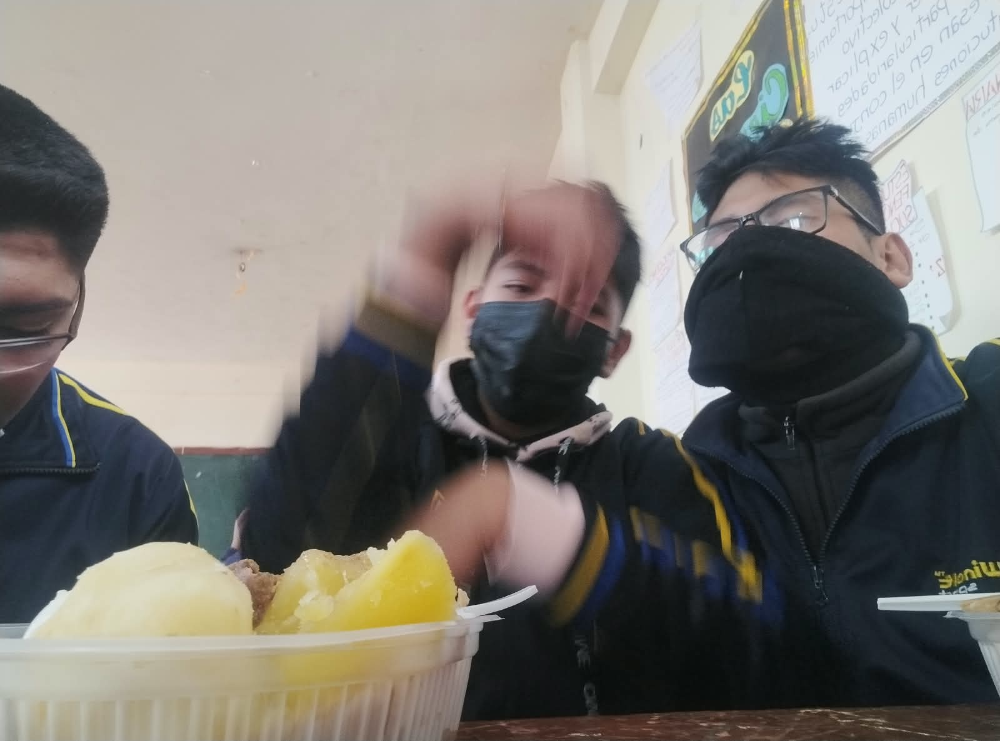
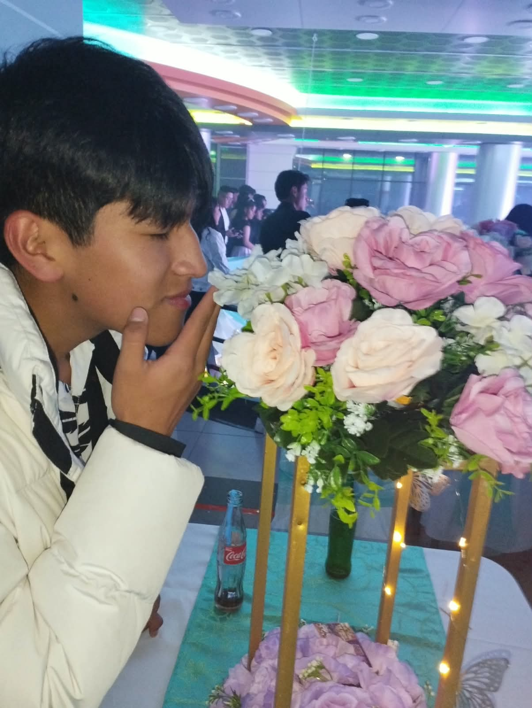

3ra Ley de Newton
“La única manera de que los humanos descubran cómo llegar a alguna parte es dejando algo atrás.”
¡Hola! Tengo 17 años y vivo en El Alto, Bolivia. Estudio en la especialidad de Sistemas Informáticos de la Unidad Educativa “Jesús Obrero”, turno mañana. Me gusta tocar el piano, bailar y hacer turismo, y disfruto compartir buenos momentos con mis amigos.
Esta página es mi huella digital: un lugar para recordar lo que viví, compartir lo que aprendí y soñar lo que viene.
Mis recuerdos del colegio
Lo que más me llevo no son solo las clases, sino las personas. Me quedo con los amigos que hice en el camino, con las risas por cualquier cosa, con todo lo que hacíamos juntos y con esas salidas a jugar que nos hacían olvidar el cansancio. También aprendí a acercarme más a mis profesores y a tenerles confianza, y eso hizo que aprender fuera más fácil y más humano.

Almuerzos en el aula, entre bromas y risas.

Momentos que se quedan en la memoria.
Lo que más valoro de esta etapa: la amistad, la confianza y los momentos compartidos.
Mis habilidades y talentos
Artísticas: toco el piano y bailo. La música y el baile son mi forma de expresarme y disfrutar.
Técnicas: se me da bien la computación y me defiendo en matemática y en sistemas.
Lo que más me interesa: computación, sistemas y matemática.
Mi galería: toca mi piano
Toca las teclas con el mouse o con el dedo: la música habla por mí.
Mi futuro
Mis metas: quiero estudiar Ingeniería Electrónica o Mecatrónica. Me gusta armar circuitos y aprender a programar, y sueño con crear cosas que combinen la tecnología con el mundo real.
Dónde quiero estudiar: mi sueño es ingresar a la Universidad Mayor de San Andrés (UMSA).
Lo que quiero aprender: electrónica, programación y todo lo que me ayude a convertir mis ideas en proyectos que funcionen.
Carta a mi yo del futuro
Querido yo del futuro:
Hoy termino una etapa y te escribo con la mochila llena de recuerdos. Espero que estés estudiando en la UMSA, armando circuitos y aprendiendo a programar. Ojalá no hayas dejado el piano ni el baile, y que sigas rodeado de buenos amigos.
Si algún día dudas, recuerda que para llegar lejos hay que dejar algo atrás, pero lo mejor siempre se lleva contigo.
Con cariño, André
Mi promoción y despedida
“Lo que dejamos atrás nos impulsa.”
Para mis compañeros, docentes y familia: gracias a mis amigos por las risas y los buenos momentos, a mis profesores por enseñarme y confiar en mí, y a mi familia por acompañarme en cada paso. Esta etapa no habría sido igual sin ustedes.
Lo que me llevo: amistades verdaderas, la confianza para acercarme a quienes me enseñan y la certeza de que cada paso, por pequeño que sea, me acerca a mis sueños.
No es un adiós, es un hasta luego. ¡Nos vemos en el futuro!